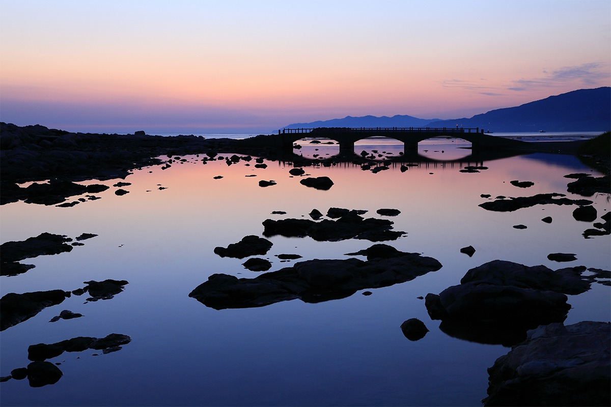
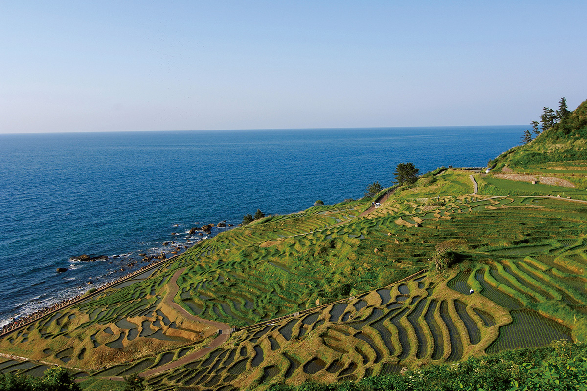
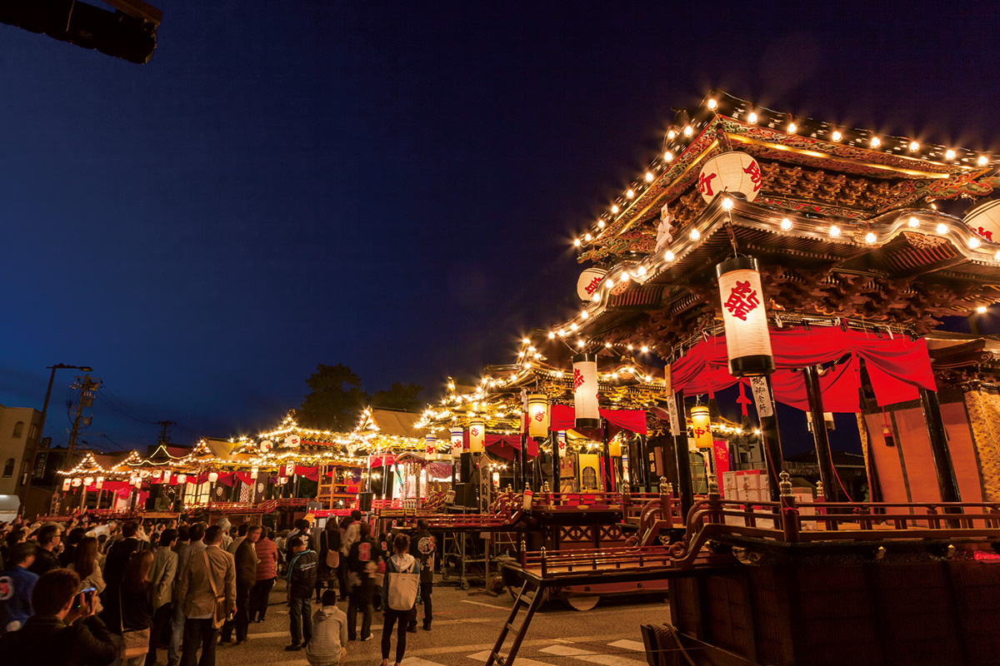
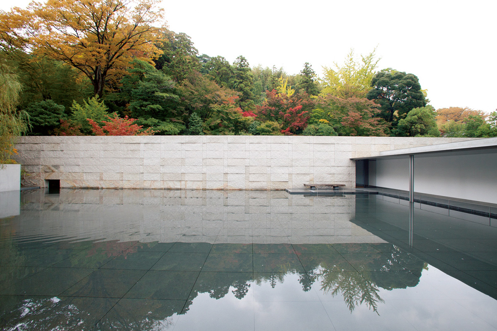
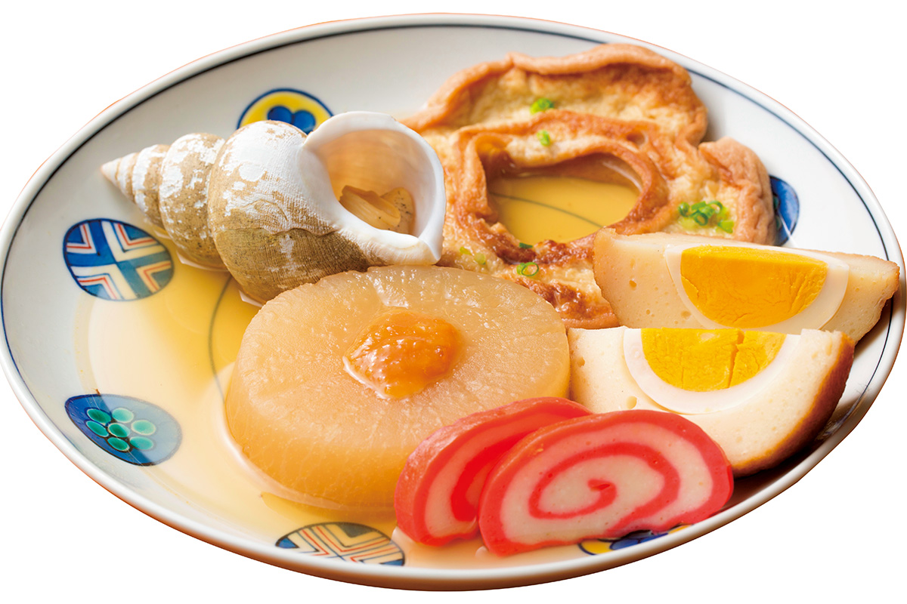
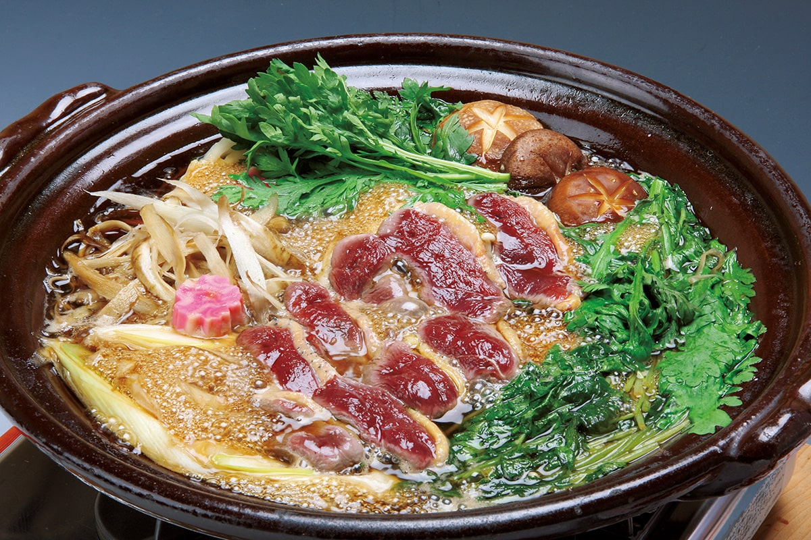
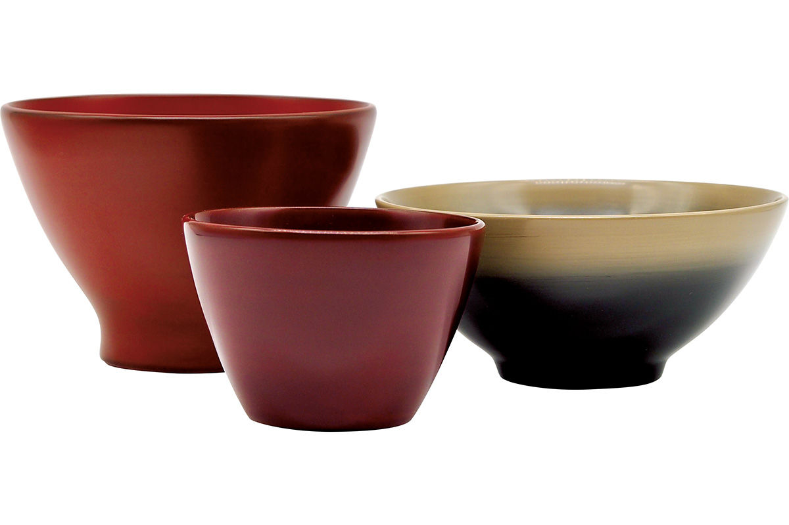
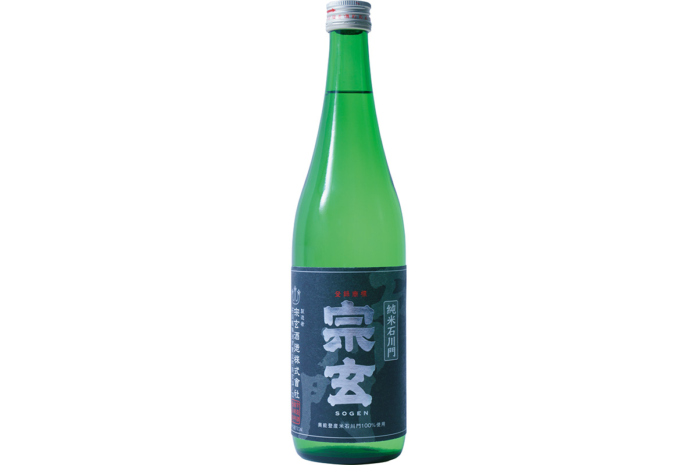
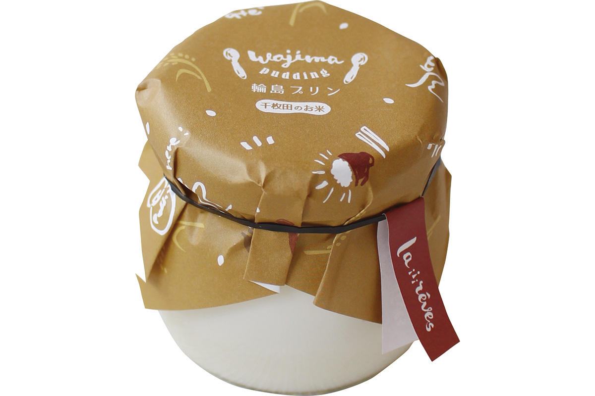
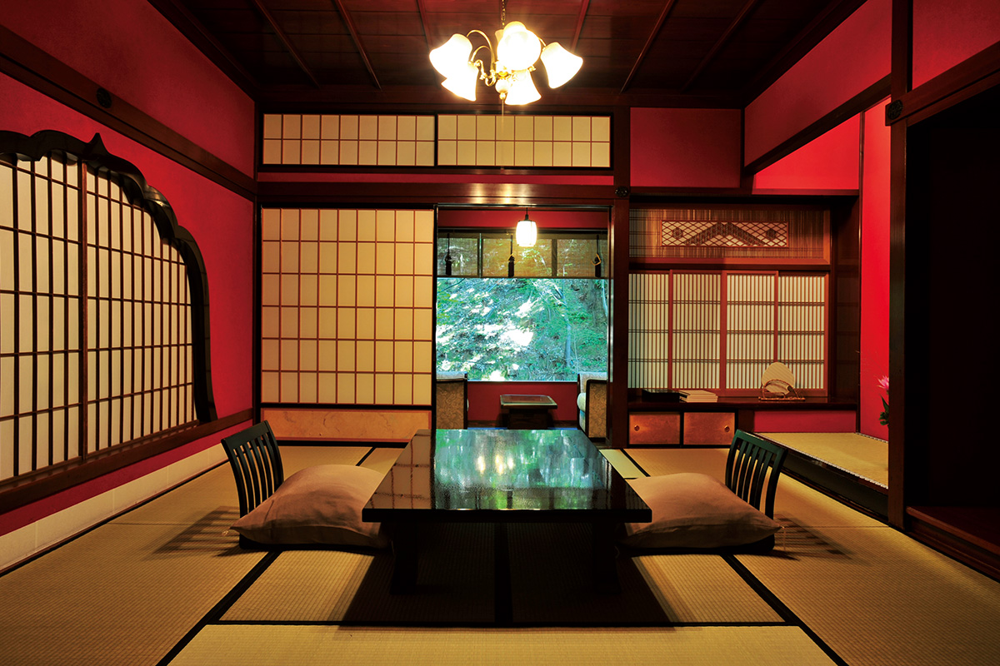

Префектура Исикава
Исикава: золото Канадзавы, лаки Вадзимы и террасы над морем

Вечернее небо розовеет над водой, в ней темнеют камни, а дальше к берегу идёт каменная арка моста.
Здесь делают тончайшее золото и самые прочные в стране лаковые чаши, а на берегу у самой воды раскинулись сотни крошечных террас. Рассказываем, за чем ехать в Исикаву.
Карта: 80 мест из 29 статей · все статьи о префектуре Исикава
Карта
Исикава на карте
80 мест из наших статей о префектуре Исикава: Канадзава и её музеи, сладости и кухня Кага, полуостров Ното после землетрясения 2024 года и его лак Вадзима-нури, онсэны Кага, ремёсла и сакэ Комацу, гора Хакусан. Нажмите на точку, чтобы открыть статью.
Пунктирный круг означает, что точка примерная: место находится в этом районе или на этом острове.
О префектуре
Княжество с миллионом коку и тридцатью шестью ремёслами
Во времена, когда страной правили военные дома, здесь стояло княжество Кага, которым из поколения в поколение управлял род Маэда. Его называли «Кага хякку манкоку», то есть «Кага, дающая миллион коку»: коку это мера риса, которой измеряли и урожай, и богатство владельца земли, и миллион коку означал одно из самых состоятельных княжеств страны.
Богатство ушло в ремёсла. При княжеском дворе развивались театр и изобразительное искусство, и сегодня в префектуре тридцать шесть традиционных промыслов: роспись тканей кага-юдзэн, лаковые изделия вадзима-нури, золотая фольга канадзава-хаку, фарфор кутани-яки. В октябре 2020 года в Канадзаву переехал Национальный музей ремёсел из Токио: это единственный в стране государственный музей, посвящённый ремёслам, и он должен стать их главным центром.
Здесь мало что пострадало от войны, поэтому сохранилось много старых кварталов и памятников: сад Кэнроку-эн, парк у замка Канадзавы, чайный квартал Хигаси-тяя, квартал самурайских усадеб Нагамати. По очертаниям префектура вытянута с севера на юг, а на северо-западе в Японское море уходит полуостров Ното. В 1871 году, когда княжества упразднили, здесь возникли три губернии, но уже через год Канадзавскую переименовали в Исикаву.
Что посмотреть
Сотни маленьких полей у самой воды
Сираёне Сэммайда
По склону, который спускается прямо к морю, одно над другим поднимаются маленькие рисовые поля. Такие поля называют танада, то есть террасы, и их здесь сотни: участки такие узкие, что работать на них можно только руками. Место зовут «первобытным пейзажем Японии», и здешние крестьяне до сих пор держатся старых способов земледелия.

- Телефон
- +81 768-23-1146
- Справки
- отдел туризма управления города Вадзима
Что ещё посмотреть
- Кэнроку-эн, один из трёх самых знаменитых садов страны
- Гора Хакусан, священная вершина над префектурой
- Дорога Тирихама-нагиса, пляж, по которому можно ехать на машине прямо у воды
Праздники
Восемь платформ съезжаются вместе
Отаби-мацури
Этот праздник встречают в городе Комацу. Его главное событие так и называют, «хикияма-хикисороэ»: восемь праздничных платформ хикияма съезжаются в одно место, и вечером их подсвечивают. Днём на платформах играют дети в костюмах: это представление называют детским театром кабуки на платформах.

- Период
- май
- Место
- святилища Усоби-дзиндзя и Хонъори-хиёси-дзиндзя и улицы города Комацу
Другие праздники
- Канадзава хякку манкоку мацури, шествие в костюмах эпохи
- Кирико-мацури на Ното, ночное шествие с высокими фонарями-кирико
- Праздник чаш Кутани, ярмарка фарфора кутани-яки
Музеи и архитектура
Дом, где вода работает зеркалом
Музей Дайсэцу Судзуки
Дайсэцу Судзуки (1870–1966) родился в Канадзаве; он был буддийским философом, который познакомил Запад с дзэн, то есть с практикой буддийского созерцания. Музей хранит его рукописи и рассказывает о его пути, а в само здание встроены те вещи, по которым узнают Канадзаву: каменные стены и водные зеркала.

- Адрес
- 3-4-20 Honda-machi, Kanazawa, Ishikawa
- Телефон
- +81 76-221-8011
Что ещё посмотреть
- Станция Канадзава, вокзал с деревянными арками над выходом
- Музей XXI века в Канадзаве, музей современного искусства со стеклянным фасадом
- Храм Мёдзё-дзи, старый храм к северу от Канадзавы
Местная кухня
Прозрачный бульон и редкие добавки
Канадзава-одэн
Одэн это зимнее блюдо, где в бульоне томят разные добавки. В Канадзаве его варят на прозрачном бульоне из рыбы и моллюсков, а в горшок кладут вещи, которых в других краях не встретишь: красный рыбный рулет акамаки и пропаренный рыбный хлебец фукаси. Зимой добавляют ещё и «кани-мэн», то есть панцирь снежного краба.

Что ещё попробовать
- Хакусан хякудзэн, парадный набор блюд у подножия горы Хакусан
- Ното-дон, миска риса с рыбой и моллюсками с полуострова Ното
- Кабура-дзуси, репа, начинённая рыбой и выдержанная в рисе
Где поесть
Кухня княжества в посуде девяти цветов
Кага-рёри «Бантэй»
Здесь готовят кага-рёри, кухню прежнего княжества: повара опираются на местные продукты и готовят дикую утку, которая считается редкостью. Едят здесь из посуды кутани-яки и яманака-нури, так что блюдо оценивают и на вкус, и глазами.

- Адрес
- 4-11 Daishoji-higashimachi, Kaga, Ishikawa
- Телефон
- +81 761-73-0141
- Часы
- с 11:30 до 14:00 и с 17:00 до 22:00
- Выходные
- среда и второй четверг месяца
- Сайт
- bantei.co.jp
Ремёсла
Чаши, которые переживают хозяина
Лаковые чаши вадзима-нури
Лак вадзима-нури узнают по густой, словно налитой, толщине и по блеску. Чашу покрывают лаком во много слоёв, и на это уходит много этапов ручной работы, зато изделие получается настолько прочным, что его можно чинить и пользоваться десятилетиями.

- Телефон
- +81 768-22-0842
- Сайт
- kirimoto.net/
Что привезти
Сакэ с полуострова и пудинг из террас
Дзюммай «Исикава-мон» завода Согэн
Дзюммай значит, что в сакэ нет добавленного спирта: его варят только из риса, воды и закваски. Завод Согэн работает в глубине полуострова Ното, берёт местный рис сорта исикава-мон и подземную воду; бутылка 720 миллилитров стоит 1430 иен.

- Телефон
- +81 768-84-1314
Пудинг «Вадзима» от кондитерской «Ла Рэв»
Этот пудинг делают без яиц и на рисе с тех самых террас Сираёне, поэтому он получается плотным и гладким. Одна баночка стоит 486 иен.

- Телефон
- +81 768-22-0131
- Сайт
- la-reves.jp
Где остановиться
Гостиница, где останавливались князья
Арая Тотоан
В княжеские времена эта гостиница при источниках Ямасиро имела особый статус: её назначали местом, где останавливались правители рода Маэда, и за воды здесь отвечал специальный распорядитель. В доме выставляют работы художника, который был связан с гостиницей.

- Адрес
- 18-119 Yamashiro-onsen, Kaga, Ishikawa
- Телефон
- +81 761-77-0010
- Комнат
- 18
- Цена
- от 34 000 иен за ночь с двумя приёмами пищи, налоги и сбор не включены
- Сайт
- araya-totoan.com
Местный диалект
Как здесь говорят «очень вкусно»
- мандэ, ойсииочень вкусно
- ойдэ асобасэдобро пожаловать
- умасона ко я нохороший крепкий ребёнок
- гэнки дэ набудь здоров
Рекорды
В чём Исикава первая
- №1 производство золотой фольги: первое место в стране
- №1 улов рыбы фугу: первое место
- №1 потребление мороженого: первое место в стране
Вопросы и ответы
Что ещё спрашивают об Исикаве
Какой вокзал известен архитектурой в виде зонта?
Станция Канадзава. У её выхода Кэнроку-эн-гути стоит «дом гостеприимства»: замысел был в том, чтобы вокзал словно раскрывал зонт над приехавшим человеком, а изнутри виден стеклянный купол.
Какие лаковые изделия известны своей прочностью?
Вадзима-нури. Их называют прочными и красивыми одновременно: каждый этап изготовления выполняет отдельный мастер, и именно высокая точность работы даёт такую крепость. Такие вещи можно отдать в починку и пользоваться ещё много лет.
Справочник
Исикава в цифрах
Общие сведения
| Административный центр | Канадзава |
| Муниципалитеты | 11 городов, 8 посёлков |
| Площадь | 4186 кв. км |
| Население | 1,14 млн человек |
| Плотность населения | 273,0 человека на кв. км |
| Туристов в год | 24,92 млн |
| Дерево префектуры | ате, местная туя |
| Цветок префектуры | рябчик чёрный |
| Птица префектуры | беркут инуваси |
Климат
| Средняя температура | +15,5 |
| Максимум | +32,9 |
| Минимум | минус 0,1 |
| Осадки | 2766 мм |
| Ясных дней | 17 |
| Дождливых дней | 185 |
| Снежных дней | 59 |
Для путешественника
| Онсэнов | 50 |
| Гостиниц и рёканов | 760 |
| Музеев искусств | 23 |
| Музеев | 96 |
| Митиноэки, придорожных станций | 26 |
| Национальных сокровищ | блюдо с изображением фазана и меч с клеймом Ёсимицу |
| Важных культурных ценностей | 128, из них 2 национальных сокровища |
| Исторических мест | 26 |
| Живописных мест | 8 |
| Природных памятников | 15 |
| Национальные парки | Хакусан, полуостров Ното, Этйдзэн-Кага, всего 3 |
Природные памятники
- Саламандра Хокурику, редкое земноводное региона
- Вишни храма Сёгэцу-дзи, старые деревья у храма
- Большой кедр святилища Явата, огромное дерево у святилища
- Лес Касима-но мори, охраняемая роща
- Бамбук синобу в Синохаре, редкий бамбук с узорными стеблями
Наши статьи
Все статьи о префектуре Исикава
Полуостров Ното
- Фестиваль Абарэ в Усицу: кирико в искрах огня и паланкины, брошенные в море
- Villa della pace: итальянская обержа на тихом заливе Нанао, где повар хочет стать частью пейзажа
- Кто стоит за кухней villa della pace: фермеры, рыбаки и мастера полуострова Ното
- Flatt's на полуострове Ното: итальянская кухня на домашнем рыбном соусе исири
- Говядина Ното-гю и овощи Исикавы: зимнее путешествие за мясом, вином и хурмой
- Музей стекла на острове Нотодзима: космическая база Кико Модзуны над заливом Нанао
- HITOTSU NOTOJIMA: суши повара с Ното в оберже на острове посреди залива
- Тирихама Нагиса драйвуэй: восемь километров по песку вдоль Японского моря
Лак Вадзимы
Канадзава и Кахоку
- Музеи Канадзавы: стеклянный круг SANAA, ремёсла в армейских зданиях и тишина Танигути
- Канадзава за стойкой: «Катаори» с продуктами Ното и суши Такаси Икуты
- Канадзава на каждый день: хлеб, вино, рыба и итальянский ужин из любимых мест керамистки, а ещё кайсэн-дон в старом матия
- Ракуган Канадзавы: сухие сладости, резные формы и движение мингэй
- KURAMOTO ICE: лёд из Канадзавы для лучших баров мира и где его попробовать
- Hyatt House Kanazawa: отель с кухней в номере, чтобы пожить в Канадзаве как дома
- Кухня Кага: обед в рётэе Канадзавы как музей, который можно съесть
- Тосииэ Маэда: щеголь с копьём, который построил Кагу «в миллион коку»
- KAJI FACTORY PARK: ткацкая фабрика в Кахоку, куда можно зайти и посмотреть
Онсэны Кага
Комацу
- Auberge eaufeu: сельская школа в Комацу, где ночуют среди картин и ужинают дарами сатоямы
- Сакэ Комацу: мастер Наохико Ногути в горах Канконоси, каменные склады и сакэ на диких дрожжах
- Комацу руками мастеров: глина для Кутани, стихи на фарфоре, жаккард и кованое железо
- Застава Атака: берег в Комацу, где разыгрывается «Кандзинтё», одна из самых любимых пьес кабуки